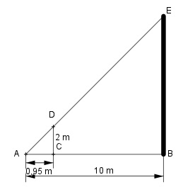

Aufgabe 96 Wie hoch ist ein Turm, der einen Schatten von 10 m hat, im Vergleich zu einem 2 m langen Stab, der parallel zu dem Turm steht und einen Schatten von 95 cm hat?  Strahlensatz: 95 cm = 0,95 m BE 10 ---- = ------- |*2 2 0,95 2 m * 10m BE = ------------- = 21,05 m 0,95 m oder BE : 2 = 10 : 0,95 Inneres Produkt = äußeres Produkt BE * 0,95 = 2 * 10 |:0,95 2 m * 10m BE = ------------- = 21,05 m 0,95 m